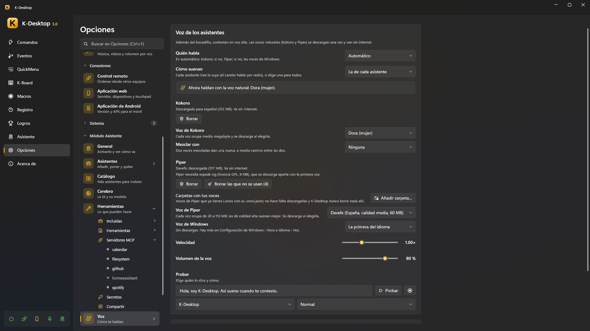

Voz y conversación
Además del bocadillo, los asistentes contestan en voz alta, cada uno con su voz. Las voces naturales se descargan una vez y van sin internet. Opciones → Asistente → Voz.

Para hablarles se usa el reconocimiento de voz de K-Desktop (palabras de activación, una tecla para hablar…): ver Voz y Hablarle.
Quién habla
Idioma en el que te hablan: te contestan en ese idioma aunque les hables en otro, y las voces que se ofrecen son de ese idioma (El de K-Desktop, o uno de los seis).
| Motor | |
|---|---|
| Automático | Kokoro; si no, Piper; si no, las voces de Windows |
| Voz natural (Kokoro) | La más natural. Español, inglés, francés, italiano y portugués (alemán todavía no). Unos 325 MB, más medio megabyte por voz |
| Voz natural (Piper) | Voces en todos los idiomas, de 20 a 115 MB cada una; las de calidad alta suenan mejor (las de calidad baja no se ofrecen) |
| Voces de Windows | Sin descargas. Hay más en Configuración de Windows → Hora e idioma → Voz |
| Solo pitidos | |
| No hablar (solo el bocadillo) |
Velocidad y Volumen de la voz van en la misma página. Las voces de cada motor (descargarlas y elegirlas) están en Voz → Voces:
- Carpetas con tus voces de Kokoro: voces que ya tienes (
.pto.bin, con su nombre de Kokoro, comoaf_bella; el idioma sale de la primera letra) se usan desde ahí sin descargarlas, marcadas como tuya. Una que también está en la lista sale una sola vez. K-Desktop nunca borra nada ahí. - Voz de Kokoro y Mezclar con: dos voces mezcladas dan una nueva, a medio camino entre las dos (Cuánto de …).
- Voz de Piper y su Variante (algunas voces tienen varias personas o formas de hablar). Carpetas con tus voces:
las voces de Piper que ya tienes (
.onnxcon su.onnx.json) se usan desde ahí sin descargarlas, y K-Desktop nunca borra nada de ahí. Borrar las que no se usan libera sitio. - Para algunos idiomas Kokoro, y Piper siempre, necesitan espeak-ng (licencia GPL, 9 MB), que se descarga aparte con la voz.
- Voz de Windows: cuál de las que tiene Windows.
- Probar esta voz, debajo de cada una: la frase de prueba con esa voz, tal cual (sin efectos).
Cómo suenan
Cómo suenan: cada asistente trae su perfil (el Lander habla por radio, desde la Luna), o elige uno para todos: Natural, Robot clásico, Marciano, Control de misión, 8 bits, Pitidos, o uno tuyo.
Probar: elige quién lo dice y cómo lo dice (normal, contento, tras un fallo) y pulsa Probar.
Perfiles de voz
Voz → Perfiles de voz es la lista: los de serie y los tuyos, con Nuevo al azar e Importar…. Al pulsar uno se abre su editor en la misma página (← Perfiles de voz vuelve a la lista), con Duplicar, Exportar y, si es tuyo, Borrar. Los de serie se quedan como están: Duplica uno para hacer el tuyo. El icono de Usar para todos (en la lista y en el editor) pone ese perfil en Cómo suenan (resaltado mientras lo usan todos; pulsado otra vez, o si lo borras, cada asistente vuelve al suyo). La Voz del perfil solo cuenta si Quién habla está en Automático. Un perfil tiene una voz (el motor), velocidad y volumen, y una cadena de efectos por la que pasa siempre su voz, en orden (arrástralos por los puntos para cambiarlo):
| Efecto | |
|---|---|
| Tono | Más agudo o más grave |
| Formantes | El tamaño de la boca, sin cambiar el tono |
| Modulador en anillo | Robot clásico |
| Vocoder | Robot de sintetizador, en una nota |
| Reducción de bits | Robot de 8 bits |
| Radio | Banda estrecha y estática, con un pitido al final y un chasquido al abrir y cerrar |
| Coro | Voz metálica y temblorosa (marciano) |
| Flanger | Como el coro, más rápido y más hondo: un avión a reacción |
| Eco | De una cabina (corto) al espacio (largo) |
| Fallo | Cortes y repeticiones, como si estuviera roto |
Además de Siempre, un perfil puede añadir efectos para algunos momentos, como cuando el asistente está contento o
tras un fallo. Probar al cambiar algo te deja oír cada cambio según lo haces. Los perfiles se pueden exportar e
importar (.json).
Cuándo hablan en voz alta
- Callar con algo a pantalla completa: con una película o un juego a pantalla completa, solo el bocadillo.
- Más bajito de noche: de 22:00 a 8:00, la voz a la mitad del volumen.
- Suenan desde donde están: suena más por el altavoz del lado en el que está el asistente.
Mientras un asistente piensa y contesta, el volumen de los demás programas sigue bajado (con Bajar el volumen mientras hablas), y no toma su propia voz por una orden.
Cada asistente, lo suyo
En la ficha de cada asistente, Personalidad y Voz:
- Idioma: en el que contesta y habla. Por defecto, el de Opciones → Asistente → General → Idioma en el que te hablan (te contestan en él aunque les hables en otro).
- Personalidad: lo que le dice a la IA quién es y cómo habla. Cámbiala a tu gusto (Restablecer vuelve a la de su paquete).
- Voz: motor, voz (solo la del motor elegido), perfil, y velocidad y volumen propios, o «Global». Probar su voz.
El propio K-Desktop (el asistente sin personaje) tiene las mismas páginas.
La conversación
- Frases fijas, sin IA: «para» / «cancela» corta lo que está haciendo; «repite»; «deshaz eso»; «repite el último comando».
- Preguntas de vuelta: si te pregunta algo («¿Chrome o Edge?») tras una orden hablada, escucha unos segundos tu respuesta, sin la palabra de activación.
- Permiso de palabra: cuando algo pregunta antes, contesta «sí», «no» o «sí, y no vuelvas a preguntar».
- «Piénsalo bien» hace que lo piense más; «está mal» hace que lo vuelva a comprobar (ver Cerebro).
- Mientras piensa puede decir «Un momento» si la respuesta tarda un poco.
- «Escribe lo que te diga» empieza un dictado: lo que digas después se escribe donde está el cursor.
- Todo queda en el chat de Panel → Asistente, lo hayas dicho como lo hayas dicho, con un botón Parar.
Respuestas largas
Cuando le pides algo largo («explícamelo bien», «hazme una lista», «escríbeme un correo», «resúmeme…») o la respuesta no cabe en un bocadillo, dice solo un resumen corto y escribe el texto entero en una hoja de lectura a su lado. Ahí puedes Copiar, Guardar como nota o que te lo lea (Léemela / Parar). Seguir en el chat abre la ventana de chat con ese asistente. En el chat, Leer entero la vuelve a abrir.
La acción «Asistente: decir»
En un comando o un evento, Asistente: decir hace que un asistente diga algo en su bocadillo y en voz alta, sin la IA («Ha terminado la copia»). Antes de decir algo por su cuenta —un temporizador, un «avísame cuando»— el asistente primero te llama la atención (el Lander vuela hasta el ratón, Kobii se acerca andando); con esta acción, solo si está marcado Ir hacia el ratón antes de decirlo. Con Callar con algo a pantalla completa en su voz, mientras algo está a pantalla completa en cualquier monitor solo sale el bocadillo.
Para que te lea lo seleccionado, escribe {seleccion} como texto y ponle un atajo al comando: selecciona un texto en
cualquier programa, pulsa el atajo y el asistente lo lee con su voz. Un texto largo lo lee entero: en el bocadillo sale
el principio y el texto completo queda en su hoja de lectura, al lado. Lo cortas como cualquier otra respuesta: «para»,
«calla» u otra orden. Si no hay nada seleccionado, un aviso lo dice.